Open Trading SurfaceOpen Trading Surface
Open Trading SurfaceOpen Trading SurfaceOpen Trading Surface doesn't just fetch data — it maintains a digital twin of the market and hands the agent the controls. The twin discovers an evidence-supported price for every covered name, reconciles it against the price the market discovered, and treats the gap — the residual — as the object of study. A worldview that becomes probability-weighted theses, driver-based company models, a full economic release calendar, portfolios measured to institutional standard, and a complex-event engine that watches for the conditions you actually care about — all on a surface the agent reads and drives, all on your machine.
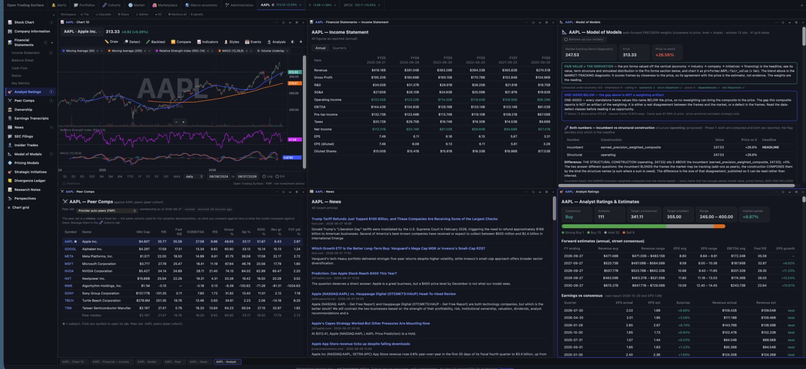
Six panels on one name, tiled. Captured from a live terminal on 2026-08-07 (5.19.6). The workspace chrome and the per-security menu are unchanged since; the chart panel has since gained a 💾 save-settings control and a derived pane-height rule.
The market is a price discovery mechanism, not a forecast. Two ideas follow from taking that seriously — and they compound the longer you use it.
A market price is a clearing level, not a prediction — so the twin's job is explanatory: discover an evidence-supported price per name, reconcile it against the market's discovered price, and attribute every element of the reconciliation. The unexplained remainder — the residual — is tracked as a first-class quantity, because that's where discovery failures, regime signals, and reratings-in-progress live. A structured worldview becomes theses with auditable probability estimates, and every name is grounded in a driver-based operating model and an articulated pro forma statement set; it all persists and compounds between sessions.
The terminal is a shared world-model: everything you see, the agent can read and drive. It isn't a dashboard a human clicks — it's an operating surface with hundreds of introspectable tools, an event inbox, reusable playbooks, an audit journal, and research memory. The facts, judgments, and their provenance live in the twin; the agent reasons over them — it never has to be the information store. Ask in plain language; the agent inspects the exact panel you're looking at and acts on it.
A worldview at the center — fed by FRED macro, SEC filings, and 13F flows — radiates into theses, company models, and portfolios, and the whole system is reassessed as new evidence arrives. That's the twin: a working model of the market in motion.
A defaulted number reaching a valuation with no way to see it is the failure this system is built to prevent. So the honesty is structural, not editorial: it is in the code paths, and it is on the screen.
Where a number cannot be honestly computed, Open Trading Surface says so by name — which input is missing, on which leg, and what would fix it. A screen field with six years of history refuses a ten-year growth rate rather than inventing one; a valuation frame that does not apply declines with its reason instead of contributing a silent zero; a bank refuses the modern defensive standard outright because the provider serves its balance sheet in a generic industrial template and the ratios would be category errors.
Number(null) is 0, and a guard that coerces instead of refusing does not merely fail to help: it publishesWhen a new layer would move a number you have already read, it discloses before it moves anything — both values side by side, the delta named, and the change recorded as a dated methodology break rather than absorbed. The benchmark moving from a price proxy to a total-return construction lowered every published excess return, and every payload that defines the benchmark says so in a sentence.
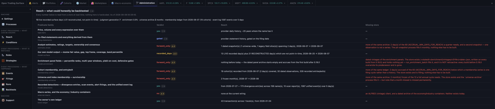
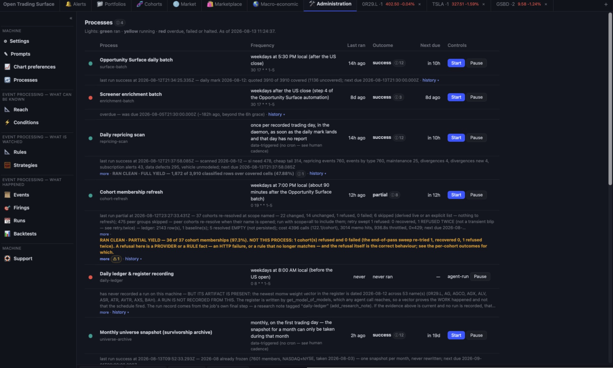
And the backtester is built to the same posture: a run that declines is a result. It refuses a cohort-scoped historical window with no dated membership ledger, refuses a predicate leg with no point-in-time value, refuses to rank a 2019 candidate set by today's fundamentals, and refuses a tape that does not reach the date you asked for — each by name, each before it runs.
full · partial · near_empty · empty_by_design · not_applicable), and a short verdict is required to name whose shortfall it is. A yield disclosure that does not say whose job the gap was converts a useful fact into a false accusation.The right-hand pane stopped being one active view and became a floating-panel workspace. The consequence that matters: a panel pins its security, which is what makes cross-security comparison possible everywhere.
Open a chart on AAPL and a chart on MSFT and put them side by side. Open the same lens on three names and read the verdicts against each other. A panel is opened against a security and a lens and neither changes for its life — changing either means opening another panel, which is the point.
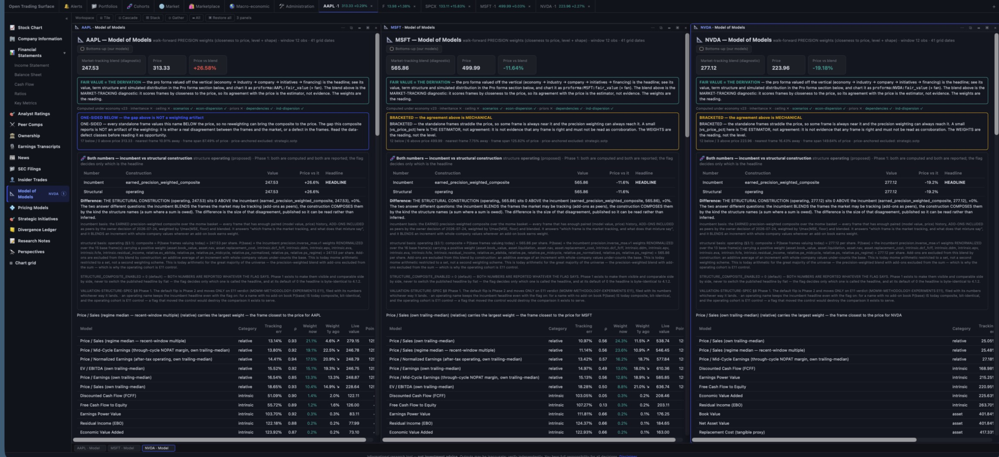
The assimilation loop made visible — where the evidence price, the market price, and the difference between them become working surfaces.
The Market tab renders price vs the precision-weighted model composite across every covered NYSE+NASDAQ name — per-model lenses, Δ% or Δ$, scrollable back one recorded trading day at a time. Gap movement is repricing, not dollar flow.
A daily scan classifies where models and prices disagree — names that need a strategic-initiative book, cheap tails routed to erosion review, data defects named as defects — and files a dated report you can slice by cohort.
When the twin's read and the market's reaction disagree, the disagreement is stored — dated, signed, per name — because divergences are the raw material for anticipating repricings when regimes rotate. New activity bubbles up to the feed.
A structured hypothesis test over the model mixture: can a move the current weights cannot explain be explained by shifted weights? That's a rerating in progress — caught as arithmetic, not narrative.
Capital programs and unmaterialized initiatives valued on dated cash-flow lattices with gates, a risk register, an append-only journal, and calibration scoring — plus a daily market-implied belief dial: the success odds today's price implies.
News, transcripts, and filings enter an injection-hardened intake, and each event's estimated price impact is routed through the models it actually touches — absorbed into fundamentals whether or not the market reacted.
One place the macro variables live — as time series on the pro forma's own period grid — and one rung down, industry-native priors and elasticities beside the company's fitted drivers. A measurement is never silently displaced by a prior.
Every operational constant in the system is registered with its value and its written basis — inspectable, adjustable, and honest about which numbers are measured and which are judgment.
Everything periodic — a FRED series, a filed statement line, a scheduled release, a note you write yourself — is one observable stream with three renderings: a plotted overlay, dated markers on a price axis, and calendar rows.
Under 🌎 Macro-economic → Calendar: the schedule of economic releases at four zooms — a twelve-month year of day cells shaded by intensity, a real seven-column month grid, a Sunday-anchored week, and a day in full — with what was expected of each release, what printed, and the surprise. A twice-daily pull records the consensus before the print, because an evening-only pull structurally cannot record a consensus before an 08:30 print.
A ref like fred:DGS10 or edgar:AAPL:NetIncomeLoss now resolves through one identity module with one normalization rule per source, one constructor and one parser. The picker stopped having a hand-maintained list: it derives what is available from the seven modules that declare series, so a series a consumer starts using becomes selectable with no edit anywhere else.
From a market view to a modeled position — top to bottom, all agent-operable.
More than twenty valuation frames behind one interface — every methodology the industry uses, each chartable through time — and on top of them, a weighted Model of Models: an estimator of the mixture of models the market is actually pricing each stock on. Same event, different mixture, different impact — which is why a rate move crushes one name and glances off another on the same day.
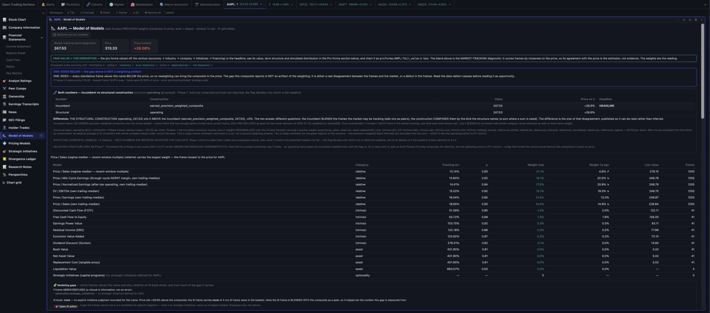
Price is where a question starts, not where it ends. Overlay the outside world on the chart, then trace any move back to the document behind it. 125 indicators and 39 drawing tools on an engine that is original code — no third-party charting library.
⚠ period-end dated, because treating any lead it shows as real is exactly the mistake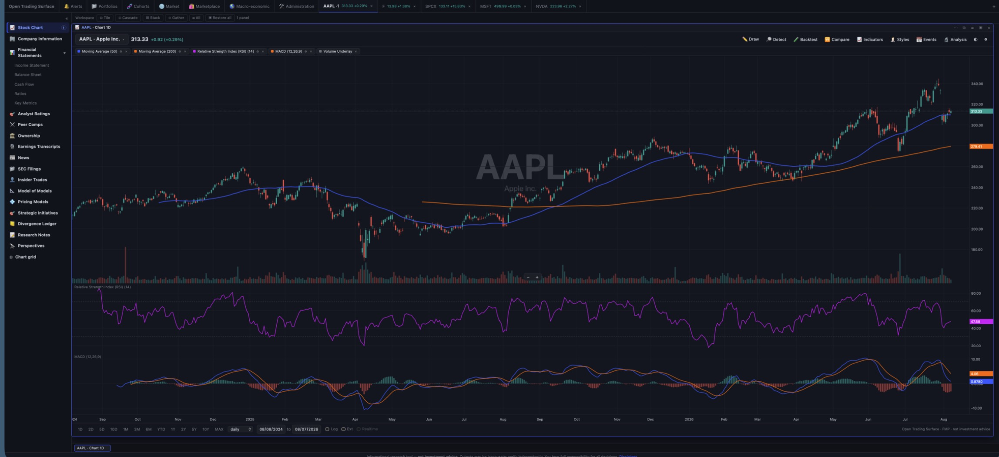
A chart grid is a first-class panel: up to four synchronized charts sharing a date window and a linked crosshair, identified by the ordered set of securities and the layout, so re-opening the same grid focuses the one you already have instead of spawning another.
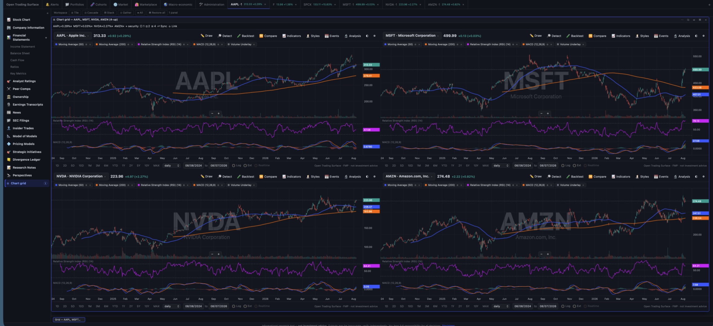
Filed history and projected periods on one quarterly grid, with the balance sheet tied in every year — and a forward statements engine that normalizes history, fits drivers, brings strategic initiatives in as period contributions, articulates the three statements, sets a horizon past the last material ramp, and discounts at one WACC.
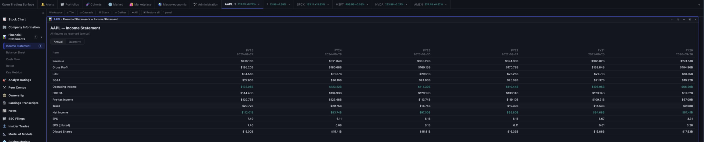
Configure a key for one of six AI vendors and each security gains a model-written assessment grounded in classical value discipline. It ships with three default lenses — bear, neutral and bull, which differ in where the burden of proof sits and in nothing else: the instruments, the accounting gates and the refusal to credit forecasts are identical, because those are the discipline and the lens is only the burden.
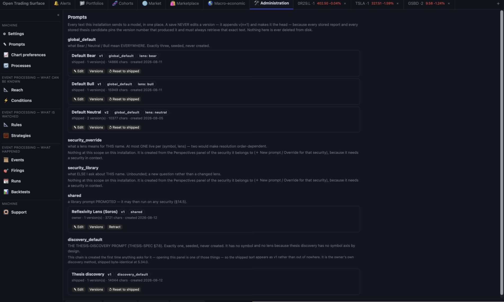
A thesis is a maintained, probability-weighted belief with an evidence ledger and a forced adversarial pass. On top of it sits an AI discovery agent that reads this system's own planes — never the open web — and writes candidates you review, edit, reject or convert.
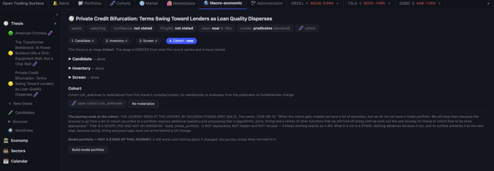
A complex-event engine sits under the terminal. Every event carries two timestamps — when it happened, and when it was first knowable — because a backtest that reads a restatement on its period-end date is not a backtest. Conditions join a cross-sectional predicate language to real temporal operators; a rule is a named, versioned condition with a subject scope; a firing can propose a trade into a paper book. The full guide is its own page →
20d is trading days, 20c is calendar days, and a bare number is a parse error that names both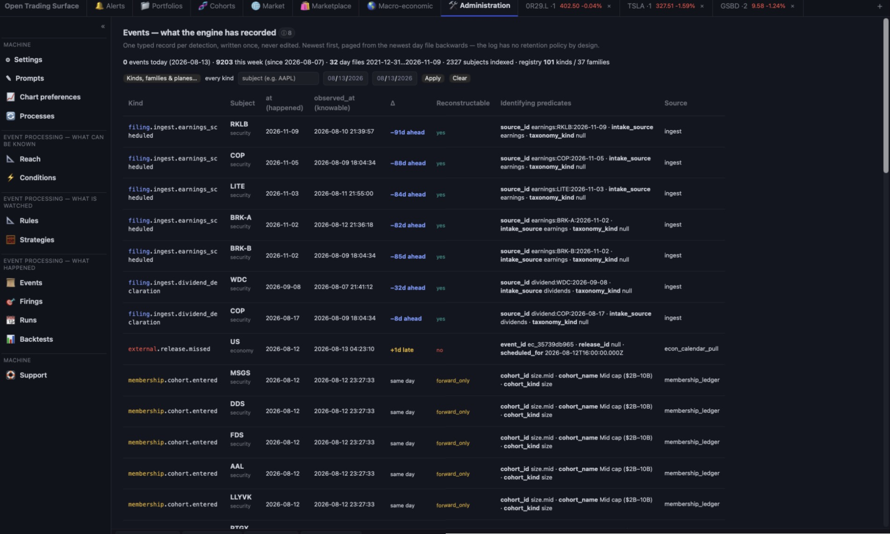
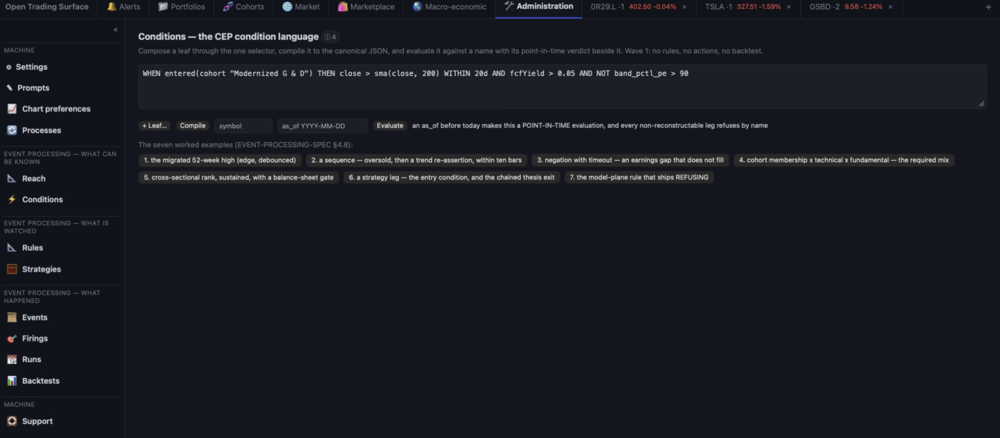
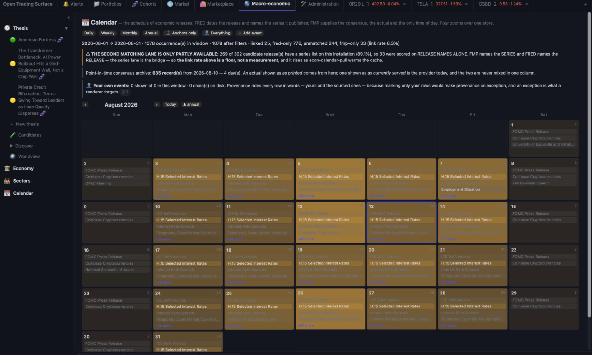
The backtest is not a simulator — it is the same daily loop the live book runs, driven by a replay clock, writing real ledger records into a paper book of its own, reconciled on every replayed day and measured by the existing performance engine. It computes no return, no Sharpe and no drawdown of its own.
The measurement core professionals expect — verified against closed forms, and honest about what it cannot compute. Positions are derived from a transaction ledger; nothing is an opaque balance.
"$1,000.00" sorting before "$9.00" is the defect the feature exists to remove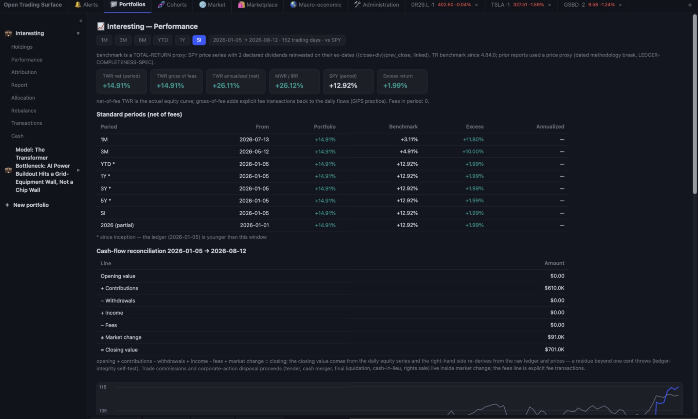
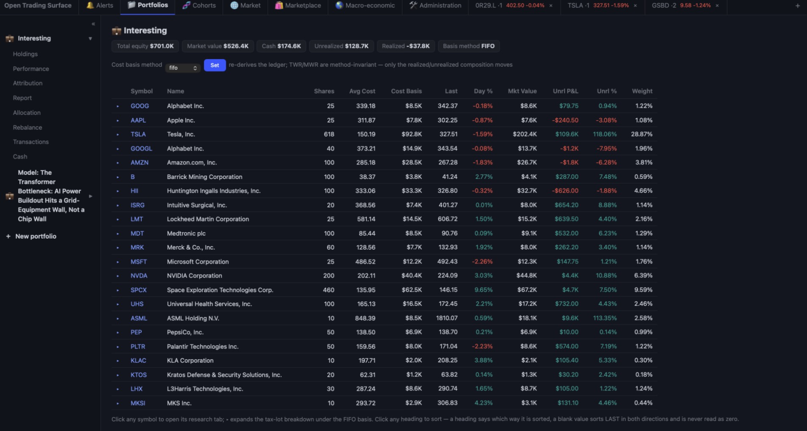
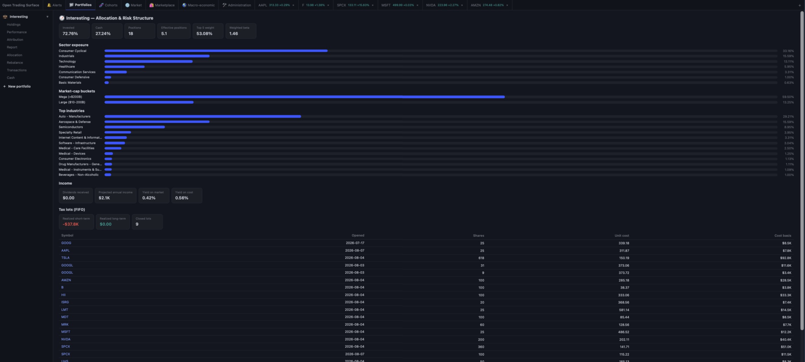
Cross-sectional factor composites, an expression language, and relative-valuation tables — well beyond boolean filters — over a vocabulary of 520 declared fields, each carrying its stage, its source block and its cost. And on top of it, Modernized G & D: Graham's defensive criteria retranslated instrument by instrument.
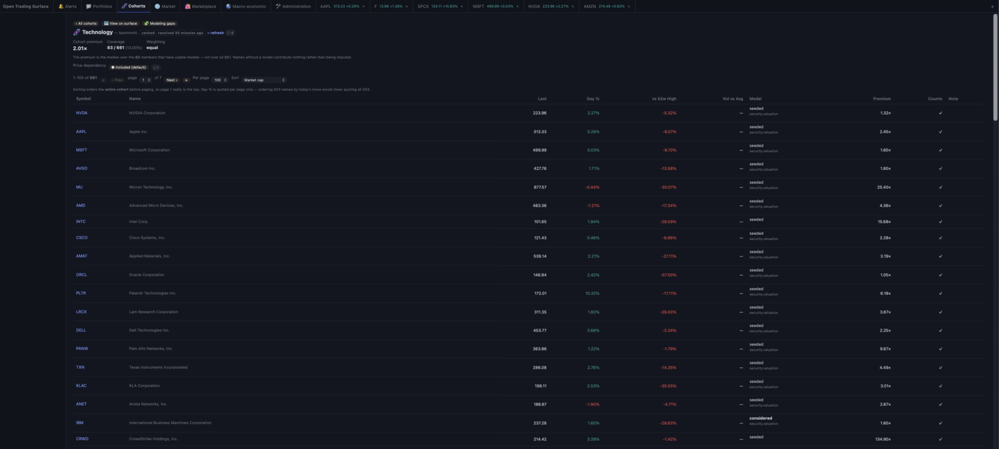
Thirteen panels behind one tab — Settings, Prompts, Chart preferences, Processes and Support under Machine, and the event-processing arc read in order: what can be known (Reach, Conditions), what is watched (Rules, Strategies), what happened (Events, Firings, Runs, Backtests).
Thesis — with every thesis, the New thesis affordance and the Worldview nested under it — plus Economy, Sectors and the release Calendar. The menu nests because an entry declares what is under it, so there is no second nesting mechanism to fall out of step.
A type-first alert feed with per-type counts and click-through to each alert's evidence surface; cohort-first subscriptions that decide which alert types fire on which securities; and a unified calendar carrying the same economic events, under the same ids, as the Calendar panel.
The peer groups every valuation is measured against — sector, size, index, factor screens, your own lists, a thesis materialized into a living cohort, or a portfolio whose membership is derived at read time so it cannot fall out of sync.
Cover, performance, attribution, risk and stress, holdings, and a drill-down page per position in contribution order — written by a zero-dependency PDF writer with no raster, no external font and no library, and downloaded straight from the Report view.
Every dialog that asks you to choose something opens the same component, over one category taxonomy — fundamental · technical · model & attribution · macro & data · market & flows · identity — derived from the underlying registries rather than hand-maintained.
Export and install shareable images — reference surfaces, authored model books, configuration packs — with immutable versioned artifacts, checksum verification, and a provenance ledger: imported records never masquerade as your own history.
Headlines enter as typed events carrying only predicates that can be checked — publisher, published-at, symbols, the title verbatim, the URL. Sentiment, importance and materiality are withheld by name: a guess about a headline is not a fact about it.
Runs locally, keys stay on your machine, security-reviewed, fully test-covered, and it never places a trade.
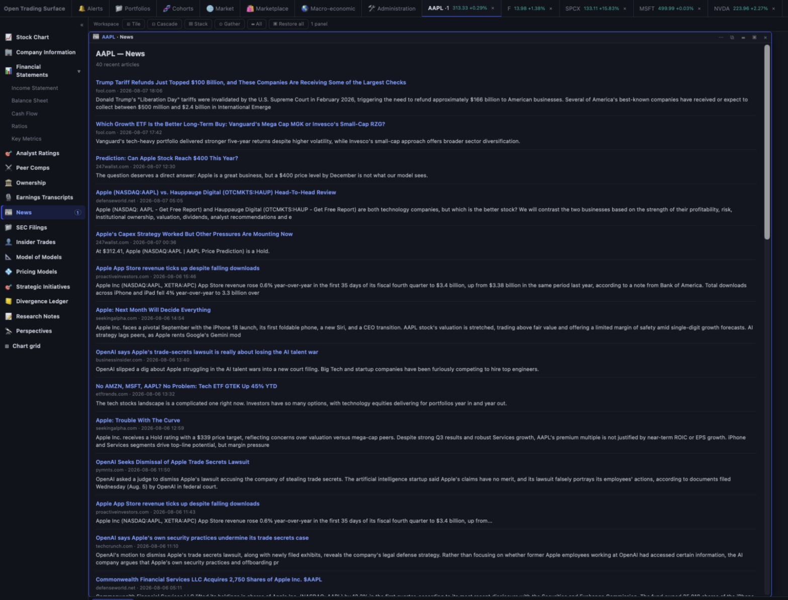
Download the package, add it in Cowork, and ask the agent to open it.
ots.plugin.ots.plugin file you downloaded, then restart the session./ots:automate and choose which scheduled jobs to install on this machine — the surface batch and the daily ledger are the ones that make the twin accrue. Administration → Processes then shows each one's light, cadence and next due.Requires Node.js 18+ (built and tested on Node 22 LTS). Stay current: the plugin tells you when a new version ships. Update & uninstall guide →